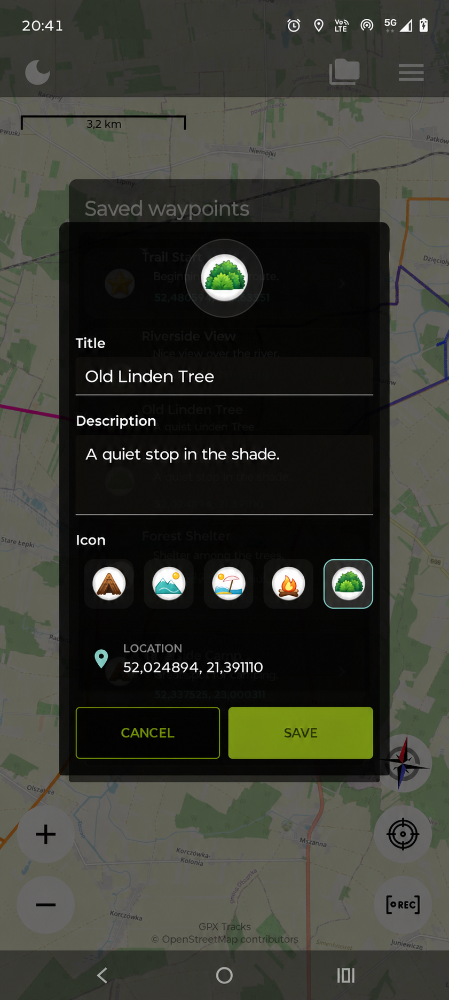
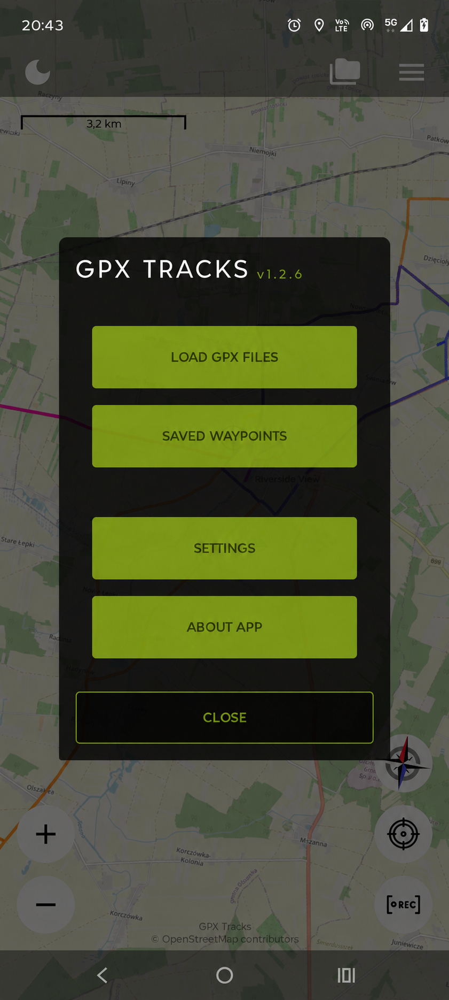
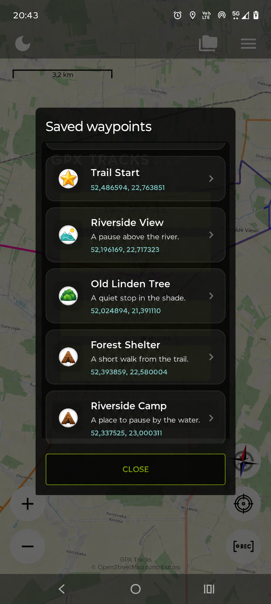

Be specific
“Riverside View” is easier to recognise than “Point 3”. Choose names you’ll understand next month.
THE WAYPOINT FIELD GUIDE
Save a useful spot in a few taps. Here’s how to add a waypoint, make it your own and bring it back onto your map.
Illustrated with real app screens, edited to use example names and notes. The editor screen below shows editing an existing point; adding a new point uses the same title, description and icon fields.
Start with your first point ↓01 / CHOOSE A PLACE
Find the place you want to save, then touch and hold it. The Add Waypoint form opens for that location.
You can save a point while browsing the map. You don’t have to start a recording first.

02 / MAKE IT USEFUL
Enter a title you’ll recognise. The description is optional — a short, useful detail often says enough. Pick an icon and tap Save.
A quiet stop in the shade.
Use icons to tell places apart: a viewpoint, parking spot, shelter or a favourite rest stop.

03 / OPEN YOUR SAVED PLACES
Open the main menu using the three horizontal lines near the top of the map. Tap Saved waypoints.
You’ll see your saved places with their icons, titles and notes. Tap a point to open its details.

04 / FIND IT AGAIN
In the point’s details, tap Show on map to centre the map on it. You can also open the editor to change its title, description or icon.
If you added the point while recording, its details can show the linked track. Use Show track on map or Hide track on map to control that track’s visibility.

SMALL HABITS. BETTER MEMORIES.
“Riverside View” is easier to recognise than “Point 3”. Choose names you’ll understand next month.
“A short walk from the trail” is a useful reminder. Add the detail you’re most likely to forget.
Edit a point when your plans change. To remove it from the map and list, open its details, choose Delete waypoint and confirm.